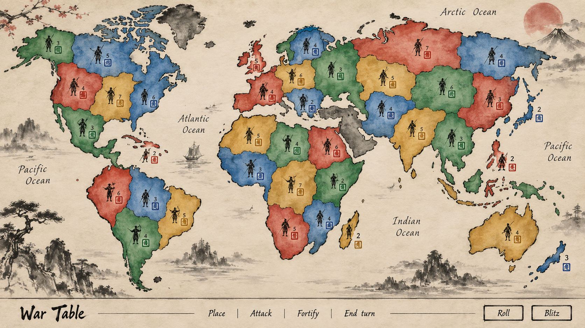
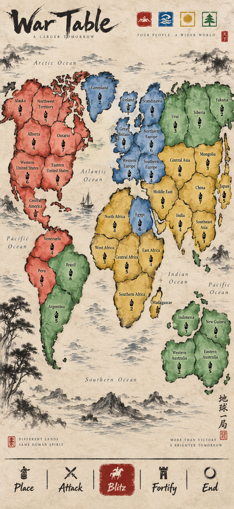
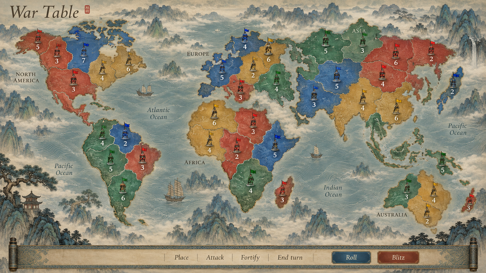
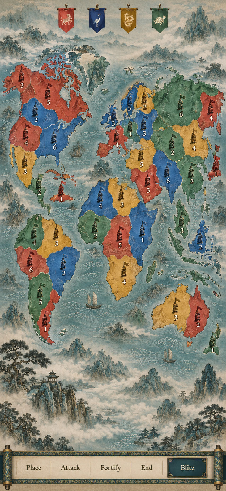
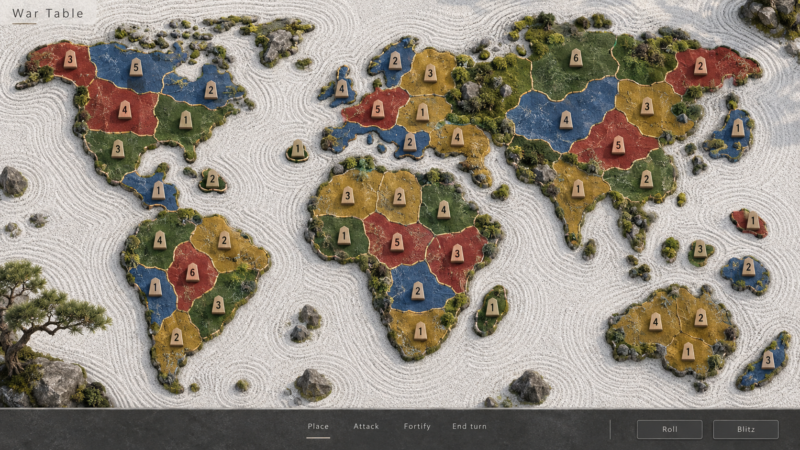
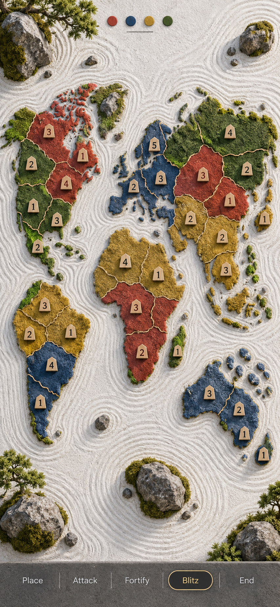
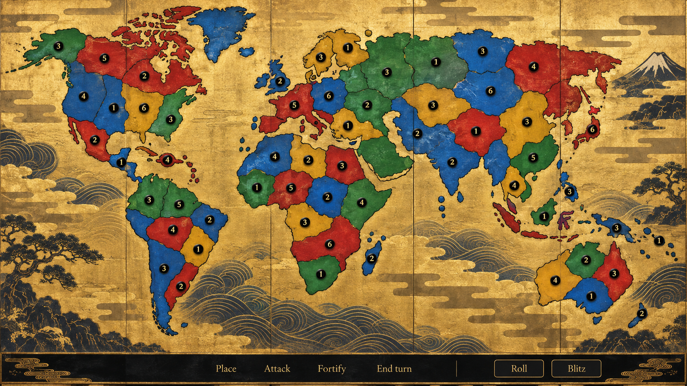
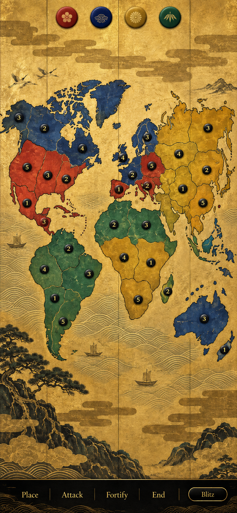
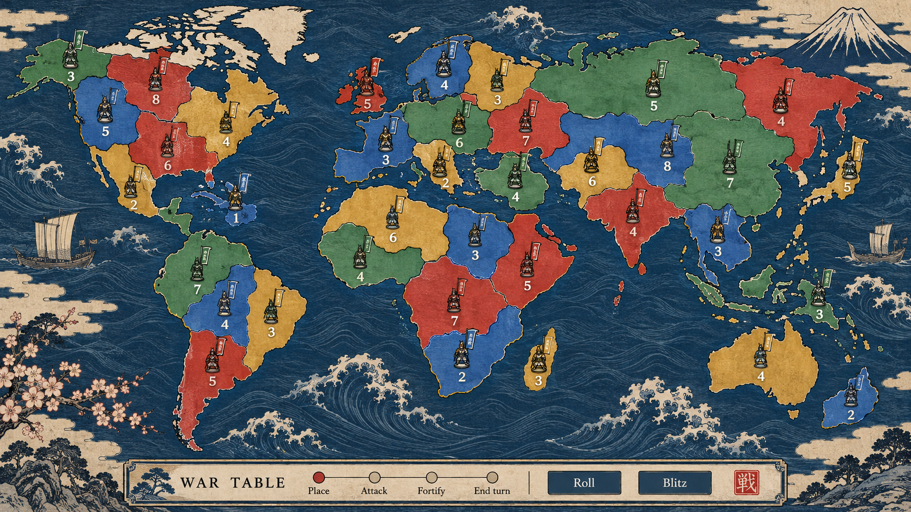
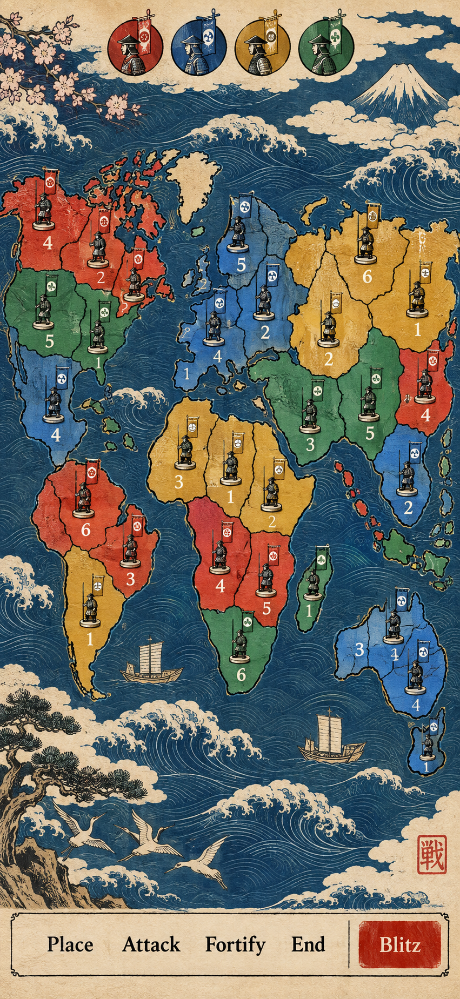

War Table · Zen / ink linework references
1 · Sumi-e Ink Scroll

Board, desktop
Phone2 · Shan Shui Mist Mountains

Board, desktop
Phone3 · Karesansui Zen Garden

Board, desktop
Phone4 · Rinpa Gold Screen

Board, desktop
Phone5 · Ukiyo-e Woodblock

Board, desktop
Phone